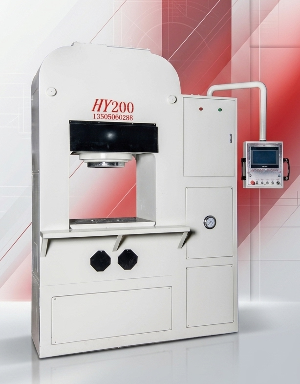
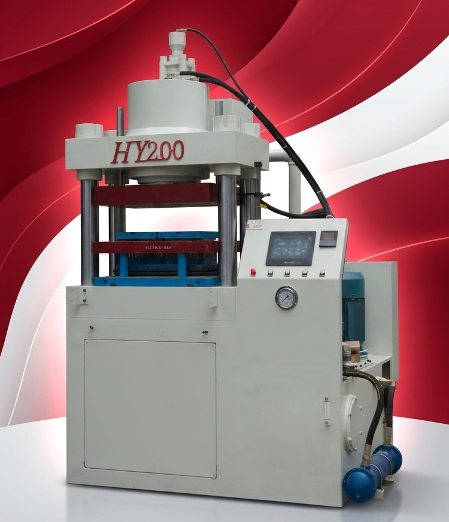
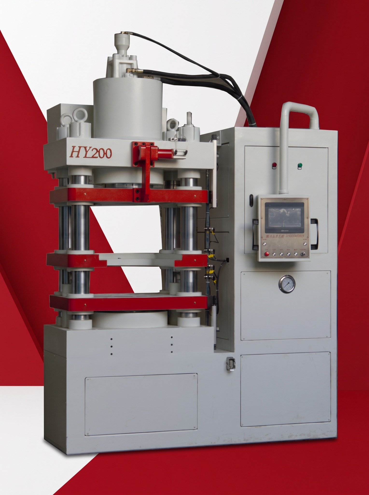
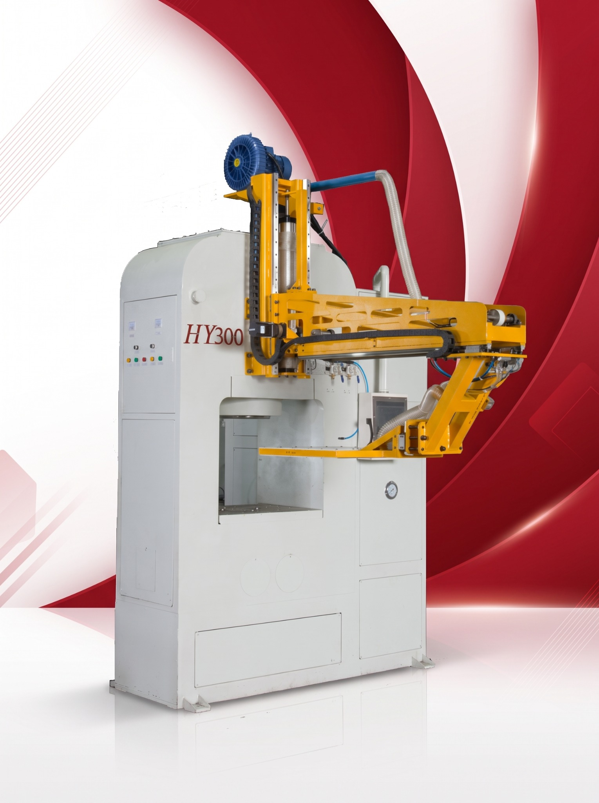
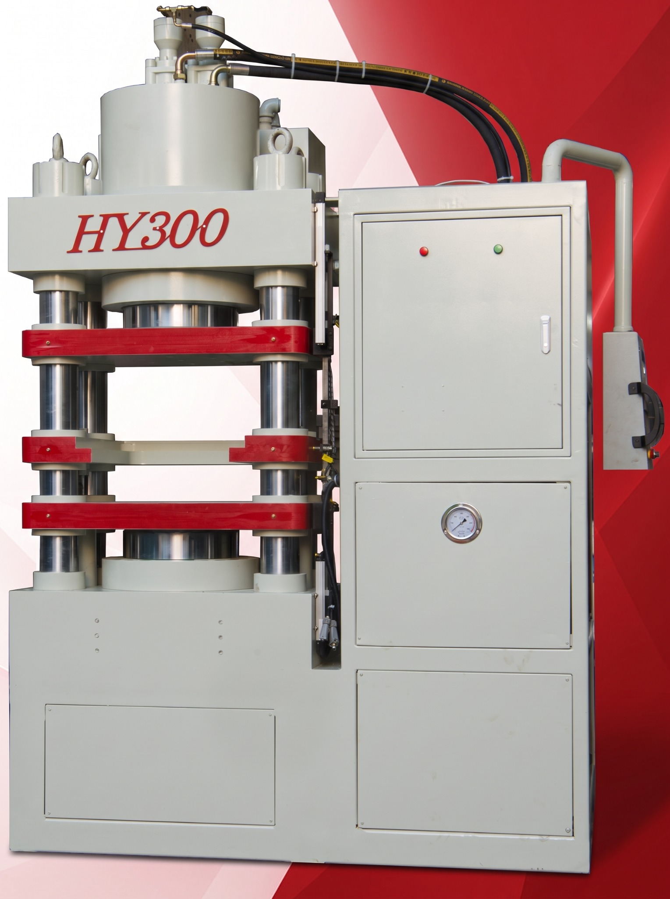
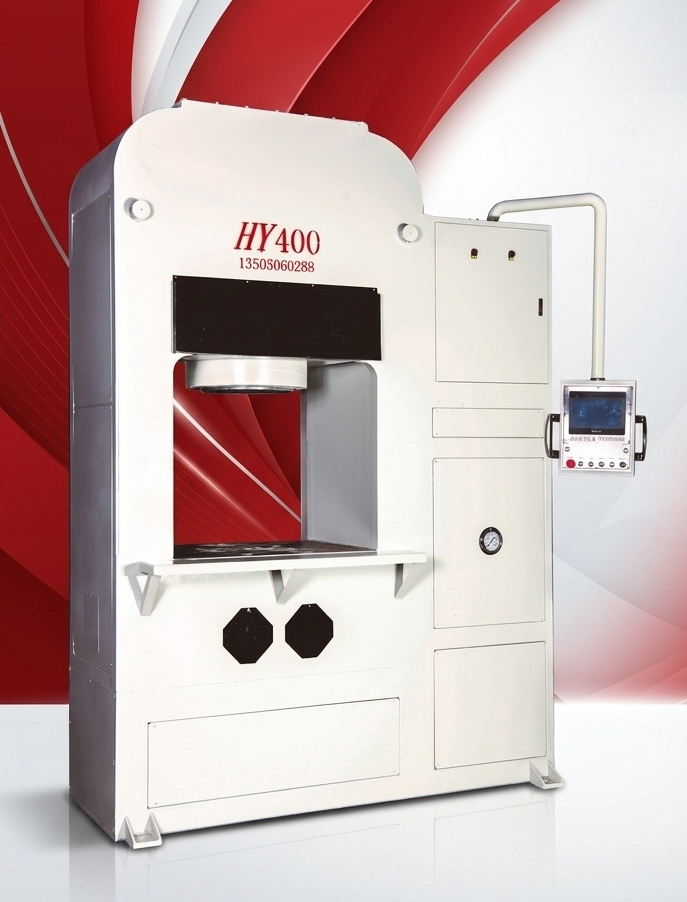
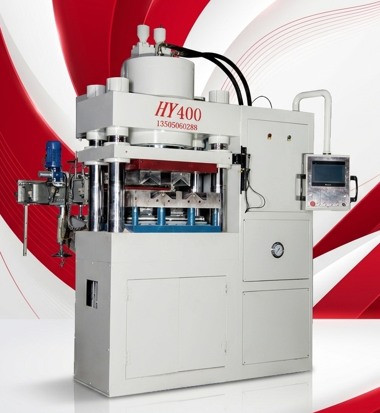

200T Frame Type
Updated machine photo supplied by Heroseong.
Explore representative frame, column, double-cylinder and floating-type hydraulic presses, selected technical parameters and machine videos.
Ask About This Model →← Back to Product SeriesThe series includes frame, column, double-cylinder and floating-type configurations. The final machine should be selected according to product dimensions, forming process, tooling and required output.

Updated machine photo supplied by Heroseong.

Representative configuration for selected forming processes.

A flexible structure option for product-specific requirements.

A structure option for specialized forming requirements.

Higher pressing force for larger products and production needs.

Alternative structure for selected product and process combinations.

Representative higher-tonnage model with a larger working area.

Updated machine photo supplied by Heroseong.
Only the three representative models selected by Heroseong are listed below.
| Parameter | 200T Frame Type | 200T Double-Cylinder Type | 400T Frame Type |
|---|---|---|---|
| Working area (mm) | 800 × 600 | 600 × 600 | 1000 × 800 |
| Main cylinder stroke (mm) | 200 | 280 | 200 |
| Main cylinder pressure (T) | 200 | 200 | 400 |
| Piston diameter (mm) | 360 | 360 | 450 |
| Max. / Min. closing height (mm) | 530 / 330 | 660 / 380 | 660 / 460 |
| Max. feeding depth (mm) | 50 | 100 | 50 |
| Ejection cylinder pressure (T) | 15 | 30 | 22 |
| Motor power (kW) | 18.5 | 18.5 | 37 |
| Total weight (T) | 5.4 | 6.8 | 10 |
Specifications are reference values for the three selected models. Final configuration may vary according to machine design and customer requirements.
Selected clips are shown below. More equipment videos and application examples are available on Instagram.
Representative ceramic mosaic forming process.
A representative application clip for powder-formed metal parts.